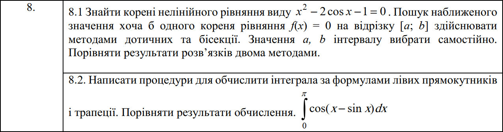
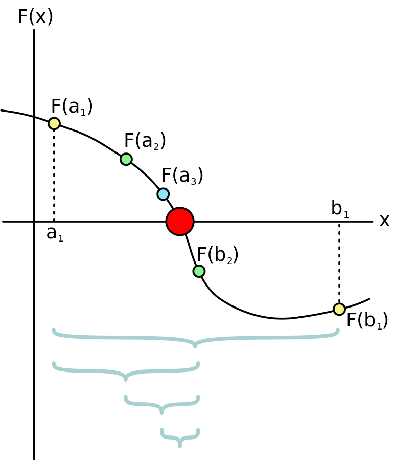
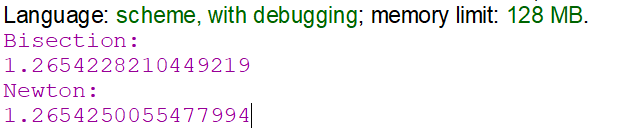
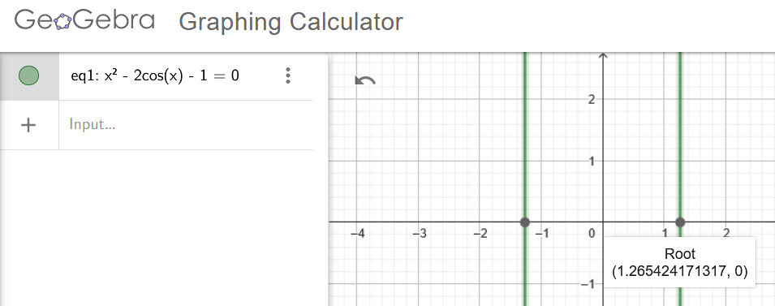
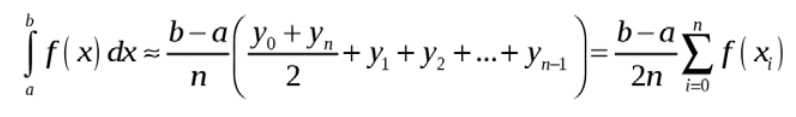
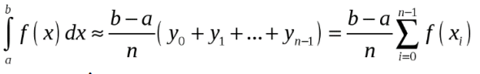
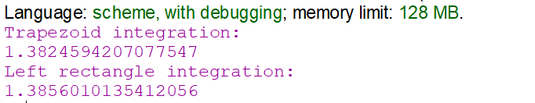
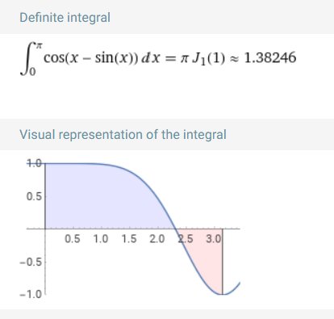

Функціональне програмування
Факультет інформаційних технологій
Кафедра програмних систем та технологій
Лабораторна робота 3
Форми lambda та let, вираз присвоєння set! для розв’язання нелінійних рівнянь та чисельного інтегрування функцій
Примачук Максим Григорович
Група: ІПЗ-44мс
Викладач: Ніколаєнко А.Ю.
2023
Мета
Розв’язати нелінійні рівняння та здійснити чисельне інтегрування функцій наближеними методами, використовуючи мови функціонального програмування та lambda, let та set! форми.
Варіант 8
Хід роботи
Завдання 1
За методом бісекції проміжок, що досліджуєтья, ділиться проміжок на 2 частини. Ця операція повторюється на тій частині проміжку, де знаходитья корінь рівняння (f(a) та f(b) мають протилежні знаки) допоки не виконаєтья умова f((a + b)/2) < error.
Метод Ньютона використовує ідею лінійного наближення до функції в заданій точці. Алгоритм включає наступні кроки: Обираєтья початкове припущення x0 для кореня функції f. Потім обчислюєтья лінійне наближення f в точці x0 і визначаєтья точка перетину лінійного наближення з віссю абсцис. Це дає наступне значення x1. Процес повторюєтья, використовуючи x1 для знаходження x2, і так далі, поки різниця між двома послідовними наближеннями не стане меншою за певну похибку. Формула для кожної ітерації: xi+1 = xi - f(xi)/f'(xi), де f' - похідна від f.

Обидва методи ефективні для пошуку коренів рівнянь, але мають різні характеристики. Метод бісекції гарантовано збігається до кореня, але він може бути повільнішим, ніж метод Ньютона. З іншого боку, метод Ньютона зазвичай працює швидше, але може не збігатися в певних ситуаціях
Код
Посилання
(define (f x)
(- (* x x) (* 2 (cos x)) 1)
)
(define (bisection f a b accuracy)
(cond
((< (abs (f (/ (+ a b) 2))) accuracy) (/ (+ a b) 2))
(else
(cond
((< (* (f (/ (+ a b) 2)) (f a)) 0) (bisection f a (/ (+ a b) 2) accuracy))
((< (* (f (/ (+ a b) 2)) (f b)) 0) (bisection f (/ (+ a b) 2) b accuracy))
(else
(display "no roots")
)
)
)
)
)
(define (diff f x accuracy)
(/ (- (f (+ x accuracy)) (f x)) accuracy)
)
(define (newton f x accuracy)
(cond
((< (abs (f x)) accuracy) x)
(else
(newton f (- (abs x) (/ (f x) (diff f x 10e-7))) accuracy)
)
)
)
(display "Bisection: ")
(newline)
(display (exact->inexact (bisection f 0 2 10e-6)))
(newline)
(display "Newton: ")
(newline)
(display (newton f 5 10e-6))
Результат
Оцінка достовірності результату
Завдання 2
Метод трапецій полягає в тому, що область під кривою функції розбивається на трапеції, а потім обчислюється сума площ цих трапецій. Формула має вигляд:
Метод лівих прямокутників обчислює визначений інтеграл шляхом підсумовування площ прямокутників. Висота кожного прямокутника визначається значенням функції в лівій кінцевій точці відповідного підінтервалу. Формула правила лівого трикутника задається формулою:
Код
Посилання
(define (f2 x)
(cos (- x (sin x)))
)
(define (trapezoid-integration f a b n)
(let
; r - ширина підінтервалу функції
((r (/ (- b a) n)))
; сума значень функції на кожному підінтервалі
(define (sum-f f a b)
(cond
((= a b) (f a))
(else
(+ (f b) (sum-f f a (- b r)))
)
)
)
; обчислення кінцевого результату
(* r (+ (/ (+ (f a) (f b)) 2) (sum-f f a b)))
)
)
(define (left-rectangle-integration f a b n)
(let
; r - ширина підінтервалу функції
((r (/ (- b a) n)))
; сума значень функції на кожному підінтервалі, крім останнього
(define (sum-f f a b)
(cond
((= a b) (f a))
(else
(+ (f b) (sum-f f a (- b r)))
)
)
)
; обчислення кінцевого результату
(* r (sum-f f a (- b r)))
)
)
(display "Trapezoid integration: ")
(newline)
(display (trapezoid-integration f2 0 (/ 355 113) 100))
(newline)
(display "Left rectangle integration: ")
(newline)
(display (left-rectangle-integration f2 0 (/ 355 113) 100))
Результат
Оцінка достовірності результату
Висновок
При виконанні лабораторної роботи створено функції, які обчислюють розв’язок нелінійниї функції f(x) за допомогою методів бісекції та Ньютона. Метод бісекції повільніший, але гарантовано збігається до кореня, метод Ньютона зазвичай працює швидше, але може не збігатися в певних ситуаціях Також створено функції, що обчислюють значення визначеного інтегралу за допомогою методів трапецій та лівих прямокутників. Метод трапецій є більш точним, позаяк трапеція покриває порівняно більшу площу під графіком функції.